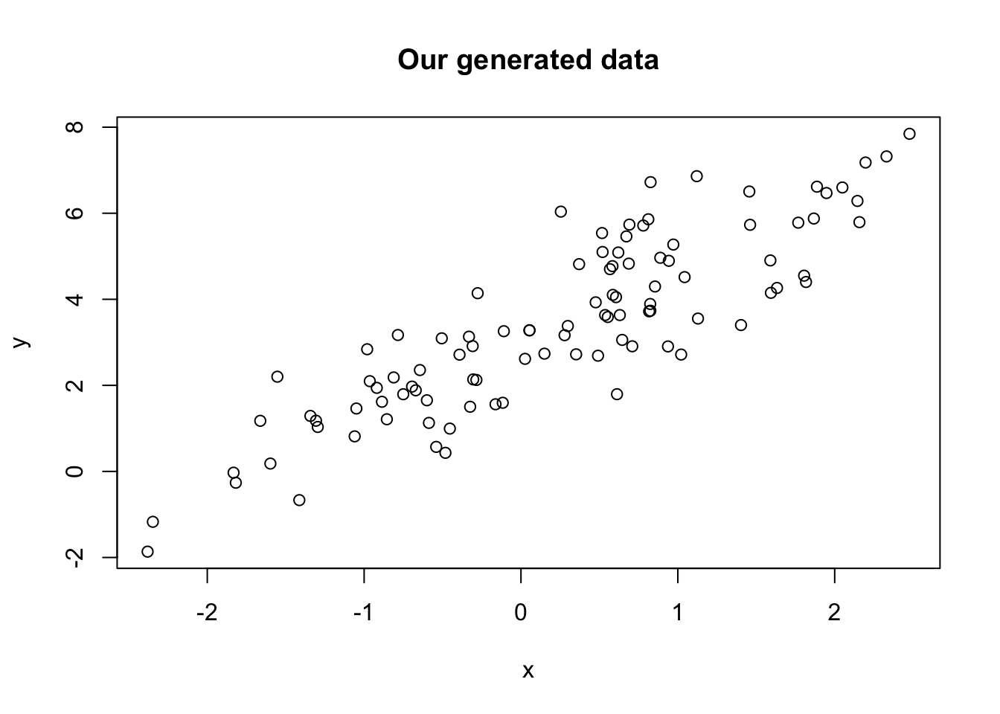
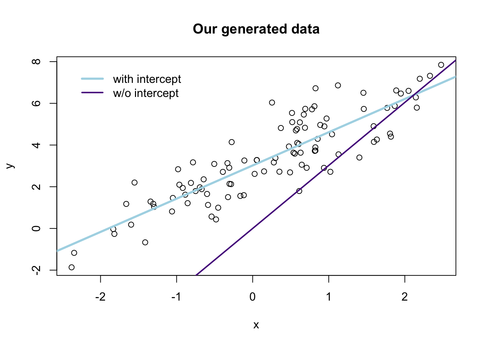
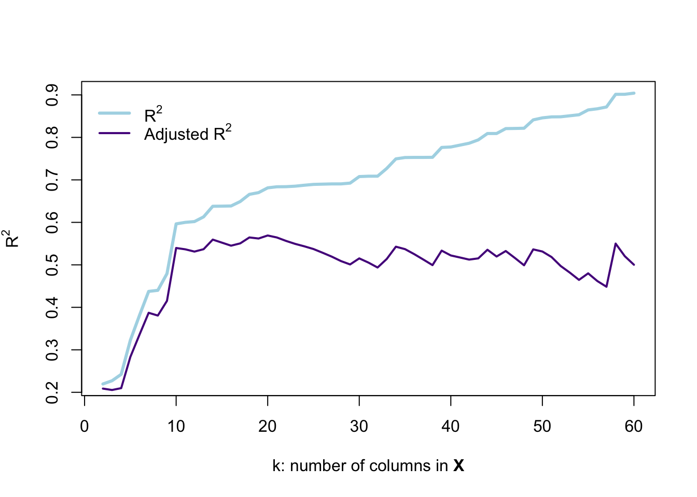

Section 4: FWL and model fit
Admin
Would it be helpful to have a piazza (or piazza-like) website where you could ask questions? Would anyone help answer questions?
What you will need
Packages:
- Previously used:
dplyr,lfe, andreadr - New:
MASS
Data: The auto.csv file.
Last week
In Section 3, we learned to write our own functions and started covering loops.
We also covered LaTeX and knitr last week during office hours (the link is to a tutorial for LaTeX and knitr).
Saving plots
Someone asked about saving plots from the plot() function. Soon, we will cover a function that I prefer to plot() (the function is from the package ggplot2), which has a different—easier—saving syntax. Nevertheless, here is the answer to saving a plot().
Saving as .jpeg
# Start the .jpeg driver
jpeg("your_plot.jpeg")
# Make the plot
plot(x = 1:10, y = 1:10)
# Turn off the driver
dev.off()Saving as .pdf
# Start the .pdf driver
pdf("your_plot.pdf")
# Make the plot
plot(x = 1:10, y = 1:10)
# Turn off the driver
dev.off()It is important to note that these methods for savings plots will not display the plot. This guide from Berkeley’s Statistics Department describes other methods and drivers for saving plots produced by plot().
A final note/pitch for knitr: knitr will automatically produce your plots inside of the documents you are knitting.
Overfull \hbox
I few people have asked me about LaTeX/knitr warnings that look something like Bad Box: test.tex: Overfull \hbox. This warning tends to happen with code chunks where you have really long lines of code. The easiest solution, in most cases, is to simply break up your lines of code. Just make sure the way you break up the line of code doesn’t change the way your code executes.
Let’s imagine you want to break up the following (somewhat strange) line of code:
library(magrittr)
x <- rnorm(100) %>% matrix(ncol = 4) %>% tbl_df() %>% mutate(V5 = V1 * V2)You do not want to break a line of code in a place where R could think the line is finished.1 For example
library(magrittr)
x <- rnorm(100) %>% matrix(ncol = 4)
%>% tbl_df() %>% mutate(V5 = V1 * V2)will generate an error because R finishes the line by defining x as a 4-column matrix and then moves to the next row. When it reaches the next row, R has no idea what to do with the pipe %>%.
One way that works for breaking up the line of code:
library(magrittr)
x <- rnorm(100) %>% matrix(ncol = 4) %>%
tbl_df() %>% mutate(V5 = V1 * V2)Another way that works for breaking up the line of code:
library(magrittr)
x <- rnorm(100) %>%
matrix(ncol = 4) %>%
tbl_df() %>%
mutate(V5 = V1 * V2)This week
We are first going to quickly cover logical operators and optional arguments to your custom functions. We will then talk about the Frisch-Waugh-Lovell (FWL) theorem, residuals, omitted variable bias, and measures of fit/overfitting.
General extensions
Logical operators
You will probably need to use logical operators from time to time. We’ve already seen a few functions that produce logical variables, for instance, is.matrix(). There are a lot of other options. You can write T for TRUE (or F for FALSE). Here are some of the basics.
# I'm not lying
T == TRUE
## [1] TRUE
# Greater/less than
1 > 3
## [1] FALSE
1 < 1
## [1] FALSE
1 >= 3
## [1] FALSE
1 <= 1
## [1] TRUE
# Alphabetization
"Ed" < "Everyone" # :(
## [1] TRUE
"A" < "B"
## [1] TRUE
# NA is weird
NA > 3
## [1] NA
NA == T
## [1] NA
NA == F
## [1] NA
is.na(NA)
## [1] TRUE
# Equals
T == F
## [1] FALSE
(pi > 1) == T
## [1] TRUE
# And
(3 > 2) & (2 > 3)
## [1] FALSE
# Or
(3 > 2) | (2 > 3)
## [1] TRUE
# Not (gives the opposite)
! T
## [1] FALSEOptional arguments
Most of the functions we’ve been using in R have additional (optional) arguments that we have not been using. For example, we have been using the read_csv() function to read csv files. We have been passing the name of a file to the function (e.g., read.csv("my_file.csv")), and the function then loads the file. However, if you look at the help file for read_csv(),2 you will see that there are a lot of other arguments that the function accepts.3 What is going on with all of these other arguments? They are optional arguments—optional because they have default values.
You will generally use the default values, but you will eventually hit a time where you want to change something. For instance, You may want to skip the first three lines of your csv file because they are not actually part of the dataset. It turns out there is an optional skip argument in the read_csv() function. It defaults to 0 (meaning it does not skip any lines), but if you typed read_csv("my_file.csv", skip = 3), the function would skip the first three lines.
While these optional arguments are helpful to know, I specifically want to tell you about them so you can include them in your own functions. Imagine a hypothetical world where you needed to write a function to estimate the OLS coefficients with and without an intercept. There are a few different ways you could go about this task—writing two functions, feeding the intercept to your function as one of the \(\mathbf{X}\) variables, etc.—but I am going to show you how to do it with an additional argument to the OLS function we defined last time. Specifically, we are going to add an argument called intercept to our function, and we are going to set the default to TRUE, since regressions with intercepts tend to be our default in econometrics. The first line of our function should then look like b_ols <- function(data, y, X, intercept = TRUE). Notice that we have defined the value of intercept inside of our function—this is how you set the default value of an argument.
Now, let’s update the b_ols() function from last time to incorporate the inclusion or exclusion of an intercept, as set by the intercept argument.4
b_ols <- function(data, y_var, X_vars, intercept = TRUE) {
# Require the 'dplyr' package
require(dplyr)
# Create the y matrix
y <- data %>%
# Select y variable data from 'data'
select_(.dots = y_var) %>%
# Convert y_data to matrices
as.matrix()
# Create the X matrix
X <- data %>%
# Select X variable data from 'data'
select_(.dots = X_vars)
# If 'intercept' is TRUE, then add a column of ones
# and move the column of ones to the front of the matrix
if (intercept == T) {
X <- data %>%
# Add a column of ones to X_data
mutate_("ones" = 1) %>%
# Move the intercept column to the front
select_("ones", .dots = X_vars)
}
# Convert X_data to a matrix
X <- as.matrix(X)
# Calculate beta hat
beta_hat <- solve(t(X) %*% X) %*% t(X) %*% y
# If 'intercept' is TRUE:
# change the name of 'ones' to 'intercept'
if (intercept == T) rownames(beta_hat) <- c("intercept", X_vars)
# Return beta_hat
return(beta_hat)
}Let’s check that the function works. First, we will create a quick dataset:
# Load the 'dplyr' package
library(dplyr)
# Set the seed
set.seed(12345)
# Set the sample size
n <- 100
# Generate the x and error data from N(0,1)
the_data <- tibble(
x = rnorm(n),
e = rnorm(n))
# Calculate y = 3 + 1.5 x + e
the_data <- mutate(the_data, y = 3 + 1.5 * x + e)
# Plot to make sure things are going well.
plot(
# The variables for the plot
x = the_data$x, y = the_data$y,
# Labels and title
xlab = "x", ylab = "y", main = "Our generated data")
Now, let’s run our regressions
# Run b_ols with and intercept
b_ols(data = the_data, y_var = "y", X_vars = "x", intercept = T)## y
## intercept 3.022053
## x 1.594535b_ols(data = the_data, y_var = "y", X_vars = "x", intercept = F)## y
## x 2.16881Notice that T and TRUE are identical in R—as are F and FALSE.
Let’s check our regressions with R’s canned function felm() (from the lfe package). Notice that you can specify a regression without an intercept using -1 in the regression formula:5
library(lfe)
# With an intercept:
felm(y ~ x, data = the_data) %>% summary()
##
## Call:
## felm(formula = y ~ x, data = the_data)
##
## Residuals:
## Min 1Q Median 3Q Max
## -2.20347 -0.60278 -0.01114 0.61898 2.60970
##
## Coefficients:
## Estimate Std. Error t value Pr(>|t|)
## (Intercept) 3.02205 0.10353 29.19 <2e-16 ***
## x 1.59454 0.09114 17.50 <2e-16 ***
## ---
## Signif. codes: 0 '***' 0.001 '**' 0.01 '*' 0.05 '.' 0.1 ' ' 1
##
## Residual standard error: 1.011 on 98 degrees of freedom
## Multiple R-squared(full model): 0.7575 Adjusted R-squared: 0.755
## Multiple R-squared(proj model): 0.7575 Adjusted R-squared: 0.755
## F-statistic(full model):306.1 on 1 and 98 DF, p-value: < 2.2e-16
## F-statistic(proj model): 306.1 on 1 and 98 DF, p-value: < 2.2e-16
# Without an intercept:
felm(y ~ x - 1, data = the_data) %>% summary()
##
## Call:
## felm(formula = y ~ x - 1, data = the_data)
##
## Residuals:
## Min 1Q Median 3Q Max
## 0.3592 2.0732 2.8736 3.7755 5.5697
##
## Coefficients:
## Estimate Std. Error t value Pr(>|t|)
## x 2.1688 0.2757 7.867 4.62e-12 ***
## ---
## Signif. codes: 0 '***' 0.001 '**' 0.01 '*' 0.05 '.' 0.1 ' ' 1
##
## Residual standard error: 3.132 on 99 degrees of freedom
## Multiple R-squared(full model): -1.351 Adjusted R-squared: -1.375
## Multiple R-squared(proj model): -1.351 Adjusted R-squared: -1.375
## F-statistic(full model):-56.89 on 1 and 99 DF, p-value: 1
## F-statistic(proj model): 61.89 on 1 and 99 DF, p-value: 4.62e-12Finally, let’s compare the two sets of predictions graphically:6
# The estimates
b_w <- b_ols(data = the_data, y_var = "y", X_vars = "x", intercept = T)
b_wo <- b_ols(data = the_data, y_var = "y", X_vars = "x", intercept = F)
# Plot the points
plot(
# The variables for the plot
x = the_data$x, y = the_data$y,
# Labels and title
xlab = "x", ylab = "y", main = "Our generated data")
# Plot the line from the 'with intercept' regression in yellow
abline(a = b_w[1], b = b_w[2], col = "lightblue", lwd = 3)
# Plot the line from the 'without intercept' regression in purple
abline(a = 0, b = b_w[1], col = "purple4", lwd = 2)
# Add a legend
legend(x = min(the_data$x), y = max(the_data$y),
legend = c("with intercept", "w/o intercept"),
# Line widths
lwd = c(3, 2),
# Colors
col = c("lightblue", "purple4"),
# No box around the legend
bty = "n")
FWL theorem
As mentioned above, we are going to dive into the Frisch-Waugh-Lovell (FWL) theorem.
Setting up
First, load a few packages and the ever-popular automobile dataset.
# Setup ----
# Options
options(stringsAsFactors = F)
# Load the packages
library(dplyr)
library(lfe)
library(readr)
library(MASS)
# Set the working directory
setwd("/Users/edwardarubin/Dropbox/Teaching/ARE212/Section04/")
# Load the dataset from CSV
cars <- read_csv("auto.csv")Next, because we often want to convert a tbl_df, tibble, or data.frame to a matrix, after selecting a few columns, let’s create function for this task. The function will accept:
data: a datasetvars: a vector of the name or names of variables that we want inside our matrix
Write the function:
to_matrix <- function(the_df, vars) {
# Create a matrix from variables in var
new_mat <- the_df %>%
# Select the columns given in 'vars'
select_(.dots = vars) %>%
# Convert to matrix
as.matrix()
# Return 'new_mat'
return(new_mat)
}Now incorporate the function in the b_ols() function from above. This addition will really clean up the function.
b_ols <- function(data, y_var, X_vars, intercept = TRUE) {
# Require the 'dplyr' package
require(dplyr)
# Create the y matrix
y <- to_matrix(the_df = data, vars = y_var)
# Create the X matrix
X <- to_matrix(the_df = data, vars = X_vars)
# If 'intercept' is TRUE, then add a column of ones
if (intercept == T) {
# Bind a column of ones to X
X <- cbind(1, X)
# Name the new column "intercept"
colnames(X) <- c("intercept", X_vars)
}
# Calculate beta hat
beta_hat <- solve(t(X) %*% X) %*% t(X) %*% y
# Return beta_hat
return(beta_hat)
}Does it work?
b_ols(the_data, y_var = "y", X_vars = "x", intercept = T)## y
## intercept 3.022053
## x 1.594535b_ols(the_data, y_var = "y", X_vars = "x", intercept = F)## y
## x 2.16881Yes!
The theorem
The first few times I saw the Frisch-Waugh-Lovell theorem in practice, I did not appreciate it. However, I’ve become a pretty big fan of it—FWL is helpful in a number of ways.7 The theorem can give you some interesting insights into what is going on inside of OLS, how to interpret coefficients, and how to implement really messy regressions. We will focus on the first two points today….
Recall that for an arbitrary regression
\[ \mathbf{y} = \mathbf{X}_1 \beta_1 + \mathbf{X}_2 \beta_2 + \boldsymbol{\varepsilon} \]
FWL tells us that we can estimate \(\beta_1\) with \(\mathbf{b}_1\) using
\[ \mathbf{b}_1 = \left(\mathbf{X}_1'\mathbf{X}_1\right)^{-1}\mathbf{X}_1'\mathbf{y} - \left(\mathbf{X}_1'\mathbf{X}_1\right)^{-1}\mathbf{X}_1'\mathbf{X}_2 \mathbf{b}_2 \]
Now define \(\mathbf{M}_2\) as the residual-maker matrix, such that post-multiplying \(\mathbf{M}_2\) by another matrix \(\mathbf{C}\) (i.e., \(\mathbf{M}_2\mathbf{C}\)) will yield the residuals from regressing \(\mathbf{C}\) onto \(\mathbf{X}_2\).
Further, define \(\mathbf{X}_1^\ast = \mathbf{M}_2\mathbf{X}_1\) and \(\mathbf{y}^\ast = \mathbf{M}_2\mathbf{y}\). These starred matrices are the respective matrices residualized on \(\mathbf{X}_2\) (regressing the matrices on \(\mathbf{X}_2\) and calculating the residuals).
FWL tells us that we can write the estimate of \(\beta_1\) as
\[ \mathbf{b}_1 = \left(\mathbf{X}_1^{\ast\prime}\mathbf{X}_1^{\ast}\right)^{-1}\mathbf{X}_1^{\ast\prime}\mathbf{y}^{\ast}\]
What does this expression tell us? We can recover the estimate for \(\beta_1\) (\(\mathbf{b}_1\)) by
- running a regression of \(\mathbf{y}\) on \(\mathbf{X}_1\) and subtracting off an “adjustment”, or
- running a regression of a residualized \(\mathbf{y}\) on a residualized \(\mathbf{X}_1\).
The same procedure works for calculating \(\mathbf{b}_2\). Max’s course notes show the full derivation for FWL.
In practice
The first insight of FWL is that FWL generates the same estimate for \(\beta_1\) as the standard OLS estimator \(\mathbf{b}\) (for the equation)
\[ \mathbf{y} = \mathbf{X}_1 \beta_1 + \mathbf{X}_2 \beta_2 + \boldsymbol{\varepsilon} \]
The “algorithm” for estimating \(\beta_1\) via FWL is
- Regress \(\mathbf{y}\) on \(\mathbf{X}_2\).
- Save the residuals. Call them \(\mathbf{e}_{\mathbf{y}\mathbf{X}_2}\).
- Regress \(\mathbf{X}_1\) on \(\mathbf{X}_2\).
- Save the residuals. Call them \(\mathbf{e}_{\mathbf{X}_1\mathbf{X}_2}\).
- Regress \(\mathbf{e}_{\mathbf{y}\mathbf{X}_2}\) on \(\mathbf{e}_{\mathbf{X}_1\mathbf{X}_2}\).
You have to admit it is pretty impressive… or at least slightly surprising.
Just in case you don’t believe me/FWL, let’s implement this algorithm using our trusty b_ols() function, regressing price on mileage and weight (with an intercept).
Before we run any regressions, we should write a function that produces the residuals for a given regression. I will keep the same syntax (arguments) as the b_ols() and will name the function resid_ols(). Within the function, we will create the \(\mathbf{X}\) and \(\mathbf{y}\) matrices just as we do in b_ols(), and then we will use the residual-maker matrix \[ \mathbf{I}_n - \mathbf{X} \left(\mathbf{X}^\prime \mathbf{X}\right)^{-1} \mathbf{X}^\prime \] which we post-multiply by \(\mathbf{y}\) to get the residuals from regressing \(\mathbf{y}\) on \(\mathbf{X}\).
resid_ols <- function(data, y_var, X_vars, intercept = TRUE) {
# Require the 'dplyr' package
require(dplyr)
# Create the y matrix
y <- to_matrix(the_df = data, vars = y_var)
# Create the X matrix
X <- to_matrix(the_df = data, vars = X_vars)
# If 'intercept' is TRUE, then add a column of ones
if (intercept == T) {
# Bind a column of ones to X
X <- cbind(1, X)
# Name the new column "intercept"
colnames(X) <- c("intercept", X_vars)
}
# Calculate the sample size, n
n <- nrow(X)
# Calculate the residuals
resids <- (diag(n) - X %*% solve(t(X) %*% X) %*% t(X)) %*% y
# Return 'resids'
return(resids)
}Now, let’s follow the steps above (note that we can combine steps 1 and 2, since we have a function that takes residuals—likewise with steps 3 and 4).
# Steps 1 and 2: Residualize 'price' on 'weight' and an intercept
e_yx <- resid_ols(data = cars, y_var = "price",
X_vars = "weight", intercept = T)
# Steps 3 and 4: Residualize 'mpg' on 'weight' and an intercept
e_xx <- resid_ols(data = cars, y_var = "mpg",
X_vars = "weight", intercept = T)
# Combine the two sets of residuals into a data.frame
e_df <- data.frame(e_yx = e_yx[,1], e_xx = e_xx[,1])
# Step 5: Regress e_yx on e_xx without an intercept
b_ols(data = e_df, y_var = "e_yx",
X_vars = "e_xx", intercept = F)## e_yx
## e_xx -49.51222Finally, the standard OLS estimator—no residualization magic—to check our work:
b_ols(data = cars, y_var = "price", X_vars = c("mpg", "weight"))## price
## intercept 1946.068668
## mpg -49.512221
## weight 1.746559Boom. There you have it: FWL in action. And it works.
So what does this result reveal? I would say one key takeaway is that when we have multiple covariates (a.k.a. independent variables), the coefficient on variable \(x_k\) represents the relationship between \(y\) and \(x_k\) after controlling for the other covariates.
Another reason FWL is such a powerful result is for computational purposes: if you have a huge dataset with many observations and many variables, but you only care about the coefficients on a few variables (e.g., the case of individual fixed effects), then you can make use of FWL. Residualize the outcome variable and the covariates of interest on the covariates you do not care about. Then complete FWL. This process allows you to invert smaller matrices. Recall that you are inverting \(\mathbf{X}^{\prime}\mathbf{X}\), which means that the more variables you have, more larger the matrix you must invert. Matrix inversion is computationally intense,8 so by reducing the number of variables in any given regression, you can reduce the computational resources necessary for your (awesome) regressions. R’s felm() and Stata’s reghdfe take advantage of this result (though they do something a bit different in practice, to speed things up even more).
Omitted variable bias
Before we move on from FWL, let’s return to an equation we breezed past above: \[ \mathbf{b}_1 = \left(\mathbf{X}_1'\mathbf{X}_1\right)^{-1}\mathbf{X}_1'\mathbf{y} - \left(\mathbf{X}_1'\mathbf{X}_1\right)^{-1}\mathbf{X}_1'\mathbf{X}_2 \mathbf{b}_2 \]
What does this equation tell us? We can recover the OLS estimate for \(\beta_1\) by regressing \(\mathbf{y}\) on \(\mathbf{X}_1\), minus an adjustment equal to \(\left(\mathbf{X}_1'\mathbf{X}_1\right)^{-1}\mathbf{X}_1'\mathbf{X}_2 \mathbf{b}_2\).
Orthogonal covariates
Notice that if \(\mathbf{X}_1\) and \(\mathbf{X}_2\) are orthogonal (\(\mathbf{X}_1^\prime\mathbf{X}_2 = \mathbf{0}\)), then the adjustment goes to zero. The FWL interpretation for this observation is that residualizing \(\mathbf{X}_1\) on \(\mathbf{X}_2\)—when the two matrices are orthogonal—will return \(\mathbf{X}_1\).
Let’s confirm in R.
First, we generate another dataset.
# Set the seed
set.seed(12345)
# Set the sample size
n <- 1e5
# Generate x1, x2, and error from ind. N(0,1)
the_data <- tibble(
x1 = rnorm(n),
x2 = rnorm(n),
e = rnorm(n))
# Calculate y = 1.5 x1 + 3 x2 + e
the_data <- mutate(the_data,
y = 1.5 * x1 + 3 * x2 + e)First run the regression of y on x1—omitting x2. Then run the regression of y on x1 and x2.
# Regression omitting 'x2'
b_ols(the_data, y_var = "y", X_vars = "x1", intercept = F)## y
## x1 1.50369# Regression including 'x2'
b_ols(the_data, y_var = "y", X_vars = c("x1", "x2"), intercept = F)## y
## x1 1.501565
## x2 3.002701Pretty good. Our variables x1 and x2 are not perfectly orthogonal, so the adjustment is not exactly zero—but it is very small.
Bad controls
Let’s take one more lesson from FWL: what happens when we add variables to the regression that (1) are not part of the DGP, and (2) are correlated with variables in the DGP?12
We will generate the data in a way similar to what we did above for omitted variable bias,13 but we will omit \(x_2\) from the data-generating process. \[ \mathbf{y} = \mathbf{1} + 2 \mathbf{x}_1 + \boldsymbol{\varepsilon} \]
# Create a var-covar matrix
v_cov <- matrix(data = c(1, 1 - 1e-6, 1 - 1e-6, 1), nrow = 2)
# Create the means vector
means <- c(5, 5)
# Define our sample size
n <- 1e5
# Set the seed
set.seed(12345)
# Generate x1 and x2
X <- mvrnorm(n = n, mu = means, Sigma = v_cov, empirical = T)
# Create a tibble for our data, add generate error from N(0,1)
the_data <- tbl_df(X) %>% mutate(e = rnorm(n))
# Set the names
names(the_data) <- c("x1", "x2", "e")
# The data-generating process
the_data <- the_data %>% mutate(y = 1 + 2 * x1 + e)Now we will run three more regressions:
yregressed on an intercept andx1(the DGP)yregressed on an intercept,x1, andx2yregressed on an intercept andx2
# Regression 1: y on int and x1 (DGP)
b_ols(the_data, y_var = "y", X_vars = "x1", intercept = T)## y
## intercept 1.016691
## x1 1.996981# Regression 2: y on int, x1, and x2
b_ols(the_data, y_var = "y", X_vars = c("x1", "x2"), intercept = T)## y
## intercept 1.0166882
## x1 1.4387198
## x2 0.5582615# Regression 3: y on int and x2
b_ols(the_data, y_var = "y", X_vars = "x2", intercept = T)## y
## intercept 1.016695
## x2 1.996980What’s going on here? The regression that matches the true DGP yields the correct coefficient estimates, but when we add \(x_2\) as a control, thinks start getting crazy. FWL helps us think about the problem here: the because \(x_1\) and \(x_2\) are so strongly correlated,14 when we “control for” \(x_2\), we remove meaningful variation—misattributing some of \(x_1\)’s variation to \(x_2\). If you are in the game of prediction, this result is not really an issue. If you are in the game of inference on the coefficients, then this result should be further reason for caution.
The R\(^2\) family
As you’ve discussed in lecture and seen in your homework, R2 is a very common measure of it. The three types of R2 you will most often see are
- Uncentered R2 (\(R^2_\text{uc}\)) measures how much of the variance in the data is explained by our model (inclusive of the intercept), relative to predicting \(\mathbf{y} = 0\).
- Centered R2 (plain old \(R^2\)) measures how much of the variance in the data is explained by our model, relative to predicting \(\mathbf{y}=\bar y\).
- Adjusted R2 (\(\bar{R}^2\)) applies a penalty to the centered R2 for adding covariates to the model.
Formal definitions
We can write down the formal mathematical definitions for each of the types of R2. We are going to assume the model has an intercept.
Uncentered R2
\[ R^2_\text{uc} = \dfrac{\hat{\mathbf{y}}^\prime \hat{\mathbf{y}}}{\mathbf{y}^\prime \mathbf{y}} = 1 - \dfrac{\mathbf{e}^\prime \mathbf{e}}{\mathbf{y}^\prime \mathbf{y}} = 1 - \dfrac{\sum_i (y_i - \hat{y}_i)^2}{\sum_i (y_i - 0)^2} = 1 - \dfrac{\text{SSR}}{\text{SST}_0} \] where \(SST_0\) is the total sum of squares relative to zero—this notation is a bit different from Max’s notes.
Centered R2
The formula is quite similar, but we are now demeaning by \(\bar{y}\) instead of zero: \[ R^2 = 1 - \dfrac{\mathbf{e}^\prime \mathbf{e}}{\mathbf{y}^{\ast\prime} \mathbf{y}^{\ast}} = 1 - \dfrac{\sum_i (y_i - \hat{y}_i)^2}{\sum_i (y_i - \bar{y})^2} = 1 - \dfrac{\text{SSR}}{\text{SST}} = \dfrac{\text{SSM}}{\text{SST}} \] where \(SST\) is the (standard definition of) total sum of squares, and \(\mathbf{y}^{\ast}\) denotes the demeaned vector of \(\mathbf{y}\).
Adjusted R2
\[ \bar{R}^2 = 1 - \dfrac{n-1}{n-k}\left(1-R^2\right) \] where \(n\) is the number of observations and \(k\) is the number of covariates.
R\(^2\) in R
We’ve covered the intuition and mathematics behind R2, let’s now apply what we know by calculating the three measures of R2 in R. We’ll use the data in auto.csv (loaded above as cars).
It will be helpful to have a function that creates the demeaning matrix \(\mathbf{A}\). Recall from Max’s notes that \(\mathbf{A}\) is defined as \[ \mathbf{A} = \mathbf{I}_n - \left(\dfrac{1}{n}\right)\mathbf{i}\\mathbf{i}^\prime \] where \(\mathbf{i}\) is an \(n\)-by-\(1\) vectors of ones. When \(\mathbf{A}\) is post-multiplied by an arbitrary \(n\)-by-\(k\) matrix \(\mathbf{Z}\) (e.g., \(\mathbf{A}\mathbf{Z}\)) the result is an \(n\)-by-\(k\) matrix whose columns are the demeaned columns of \(\mathbf{Z}\).
The function will accept \(N\), the desired number of rows.
# Function that demeans the columns of Z
demeaner <- function(N) {
# Create an N-by-1 column of 1s
i <- matrix(data = 1, nrow = N)
# Create the demeaning matrix
A <- diag(N) - (1/N) * i %*% t(i)
# Return A
return(A)
}Now let’s write a function that spits out three values of R2 we discussed above when we feed it the same inputs as our b_ols() function.15 We will make use of a few functions from above: to_matrx(), resid_ols(), demeaner()
# Start the function
r2_ols <- function(data, y_var, X_vars) {
# Create y and X matrices
y <- to_matrix(data, vars = y_var)
X <- to_matrix(data, vars = X_vars)
# Add intercept column to X
X <- cbind(1, X)
# Find N and K (dimensions of X)
N <- nrow(X)
K <- ncol(X)
# Calculate the OLS residuals
e <- resid_ols(data, y_var, X_vars)
# Calculate the y_star (demeaned y)
y_star <- demeaner(N) %*% y
# Calculate r-squared values
r2_uc <- 1 - t(e) %*% e / (t(y) %*% y)
r2 <- 1 - t(e) %*% e / (t(y_star) %*% y_star)
r2_adj <- 1 - (N-1) / (N-K) * (1 - r2)
# Return a vector of the r-squared measures
return(c("r2_uc" = r2_uc, "r2" = r2, "r2_adj" = r2_adj))
}And now we run the function and check it with felm()’s output
# Our r-squared function
r2_ols(data = cars, y_var = "price", X_vars = c("mpg", "weight"))## r2_uc r2 r2_adj
## 0.8698475 0.2933891 0.2734846# Using 'felm'
felm(price ~ mpg + weight, cars) %>% summary()##
## Call:
## felm(formula = price ~ mpg + weight, data = cars)
##
## Residuals:
## Min 1Q Median 3Q Max
## -3332 -1858 -504 1256 7507
##
## Coefficients:
## Estimate Std. Error t value Pr(>|t|)
## (Intercept) 1946.0687 3597.0496 0.541 0.59019
## mpg -49.5122 86.1560 -0.575 0.56732
## weight 1.7466 0.6414 2.723 0.00813 **
## ---
## Signif. codes: 0 '***' 0.001 '**' 0.01 '*' 0.05 '.' 0.1 ' ' 1
##
## Residual standard error: 2514 on 71 degrees of freedom
## Multiple R-squared(full model): 0.2934 Adjusted R-squared: 0.2735
## Multiple R-squared(proj model): 0.2934 Adjusted R-squared: 0.2735
## F-statistic(full model):14.74 on 2 and 71 DF, p-value: 4.425e-06
## F-statistic(proj model): 14.74 on 2 and 71 DF, p-value: 4.425e-06I’ll leave the regression-without-an-intercept fun to you.
Overfitting
R2 is often used to measure the fit of your model. So why does Max keep telling you that maximal R2 isn’t a very good goal?16 The short answer: overfitting.
If you have enough variables, you can probably find a way to fit your outcome variable pretty well,17 but it doesn’t actually mean you are going to be able to predict any better outside of your sample or that you are learning anything valuable about the data-generating process.
As an aside, let’s imagine we want to use dplyr’s select() function now. Try select(cars, rep78) in your console. What happens? If you loaded MASS after dplyr, MASS has covered up dplyr’s select() function with its own—you may have noticed a message that said The following object is masked from `package:dplyr`: select. You can specify that you want dplyr’s function using the syntax dplyr::select(). We will use this functionality below.
To see this idea in practice, let’s add 50 random variables to the cars dataset (and drop the rep78 and make variables).
# Find the number of observations in cars
n <- nrow(cars)
# Fill an n-by-50 matrix with random numbers from N(0,1)
set.seed(12345)
rand_mat <- matrix(data = rnorm(n * 50, sd = 10), ncol = 50)
# Convert rand_mat to tbl_df
rand_df <- tbl_df(rand_mat)
# Change names to x1 to x50
names(rand_df) <- paste0("x", 1:50)
# Bind cars and rand_df; convert to tbl_df; call it 'cars_rand'
cars_rand <- cbind(cars, rand_df) %>% tbl_df()
# Drop the variable 'rep78' (it has NAs)
cars_rand <- dplyr::select(cars_rand, -rep78, -make)Now we are going to use the function lapply() (covered near the end of last section) to progressively add variables to a regression where price is the outcome variable (there will always be an intercept).
result_df <- lapply(
X = 2:ncol(cars_rand),
FUN = function(k) {
# Apply the 'r2_ols' function to columns 2:k
r2_df <- r2_ols(
data = cars_rand,
y_var = "price",
X_vars = names(cars_rand)[2:k]) %>%
matrix(ncol = 3) %>% tbl_df()
# Set names
names(r2_df) <- c("r2_uc", "r2", "r2_adj")
# Add a column for k
r2_df$k <- k
# Return r2_df
return(r2_df)
}) %>% bind_rows()Let’s visualize R2 and adjusted R2 as we include more variables.
# Plot unadjusted r-squared
plot(x = result_df$k, y = result_df$r2,
type = "l", lwd = 3, col = "lightblue",
xlab = expression(paste("k: number of columns in ", bold("X"))),
ylab = expression('R' ^ 2))
# Plot adjusted r-squared
lines(x = result_df$k, y = result_df$r2_adj,
type = "l", lwd = 2, col = "purple4")
# The legend
legend(x = 0, y = max(result_df$r2),
legend = c(expression('R' ^ 2),
expression('Adjusted R' ^ 2)),
# Line widths
lwd = c(3, 2),
# Colors
col = c("lightblue", "purple4"),
# No box around the legend
bty = "n")
This figure demonstrates why R2 is not a perfect descriptor for model fit: as we add variables that are pure noise, R2 describes the fit as actually getting substantially better—every variable after the tenth column in \(\mathbf{X}\) is randomly generated and surely has nothing to do with the price of a car. However, R2 continues to increase… and even the adjusted R2 doesn’t really give us a clear picture that the model is falling apart.
If you are interested in a challenge, change the r2_ols() function so that it also spits out AIC and SIC and then re-run this simulation. You should find something like:

Here, AIC appears to do the best job noticing when the data become poor.
Sorry for starting with the wrong way to break up a line of code.↩
?read_csv, assuming you have thereadrpackage loaded.↩You will also notice that the file name that we feed to the function is read as the
fileargument. You can get the same result by typingread_csv("my_file.csv")orread_csv(file = "my_file.csv").↩I changed the names of the arguments in our function to be a bit more descriptive and easy to use.↩
Correspondingly, you can force an intercept using
+1in the regression formula.↩See here for help with color names in R. You can also use html color codes.↩
I googled “frisch waugh lovell fan club” but did not find anything: you should consider starting something formal.↩
At least that is what I hear…↩
Akin to the univariate random normal generator
rnorm().↩We need a 2-by-2 variance-covariance matrix because we have two variables and thus need to specify the variance for each (the diagonal elements) and the covariance between the two variables.↩
This class is not focused on causal inference—ARE 213 covers that topic—but it is still worth keeping omitted variable bias in mind, no matter which course you take.↩
In some sense, this case is the opposite of omitted variable bias.↩
I’m going to increase the covariance and set the means of \(x_1\) and \(x_2\) equal.↩
The collinearity of the two covariates is another problem.↩
I will assume
interceptis alwaysTRUEand thus will omit it.↩in econometrics and in life↩
Remember the spurious correlation website Max showed you?↩